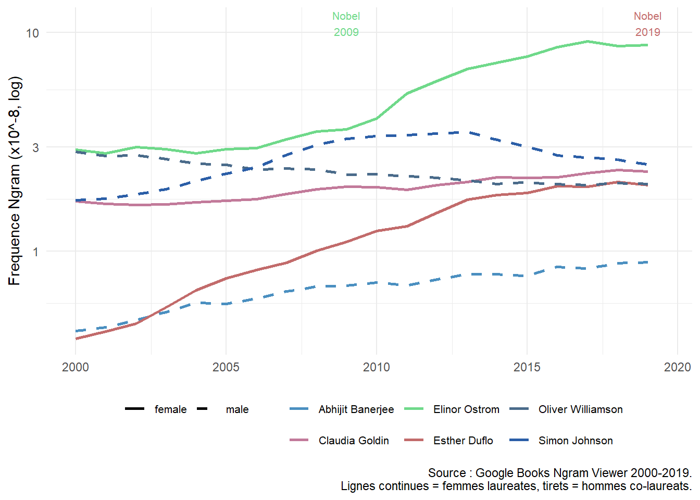
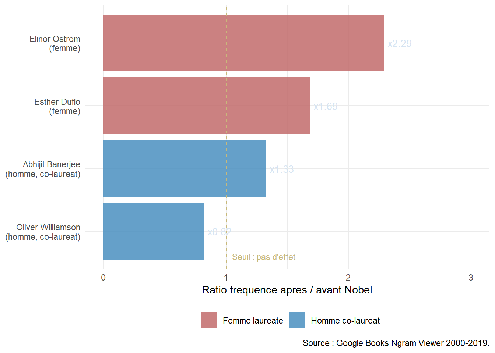

Warning in log(x, base): Production de NaN
Warning in log(x, base): Production de NaN
Le prix permet un rattrapage – mais c’est l’arbre qui cache la foret
Nous avons montre que les femmes economistes sont systematiquement sous-representees dans la memoire disciplinaire, et que cet ecart ne se resorbe pas au cours du XXe siecle. Mais que se passe-t-il quand une femme economiste recoit la plus haute distinction de la discipline – le Prix Nobel d’economie ?
Trois femmes l’ont obtenu a ce jour, sur laureats totaux :
Soit 3 femmes sur 6 laureats dans nos donnees – et 3 sur environ 95 au total depuis 1969.
Pour mesurer l’effet du Nobel sur la persistance memorielle, on compare la frequence Ngram avant et apres l’annee du prix pour chaque laureat. La strategie est simple et transparente.
Pour chaque laureat i recevant le Nobel l'annee n :
freq_avant = moyenne des frequences Ngram de 2000 a n-1
freq_apres = moyenne des frequences Ngram de n a 2019
ratio = freq_apres / freq_avant
Un ratio > 1 signifie que le laureat est plus mentionne apres le prix qu'avant. Un ratio de 2 signifie que la frequence double.
Cette approche est une version simplifiee d’une difference-avant-apres. Elle a une limite importante : elle ne controle pas pour la tendance generale d’augmentation du volume de publications. Pour y remedier, on compare les femmes laureates a leurs co-laureats masculins – qui recoivent le prix la meme annee et sont donc soumis aux memes conditions generales.
Warning in log(x, base): Production de NaN
Warning in log(x, base): Production de NaN
Note : l’effet Nobel est visible a l’oeil nu pour Ostrom (vert) – sa frequence decolle nettement apres 2009 tandis que Williamson (tirets gris) stagne voire baisse. L’effet est plus modere pour Duflo (rose) qui etait deja visible avant 2019.

Note : les deux femmes laureates pour lesquelles on peut calculer le ratio (Ostrom et Duflo) ont un ratio superieur a celui de leurs co-laureats masculins (2,29 et 1,69 contre 1,33 et 0,82). Williamson voit sa frequence baisser apres 2009, probablement parce que l’attention mediatique s’est concentree sur Ostrom.
| Nom | Genre | Annee Nobel | Ratio apres/avant | Interpretation |
|---|---|---|---|---|
| Abhijit Banerjee | Homme co-laureat | 2019 | 1.33 | Rattrapage modere |
| Elinor Ostrom | Femme laureate | 2009 | 2.29 | Fort rattrapage |
| Esther Duflo | Femme laureate | 2019 | 1.69 | Fort rattrapage |
| Oliver Williamson | Homme co-laureat | 2009 | 0.82 | Pas de rattrapage |
Note : le ratio est calcule sur la periode 2000-2019. Pour Goldin (Nobel 2023) et Johnson (Nobel 2024), le corpus Ngram ne couvre pas la periode post-Nobel – ils apparaissent dans le graphique mais pas dans ce tableau.
Les resultats montrent que le Nobel genere bien un rattrapage pour les femmes laureates – et que ce rattrapage est plus fort que pour leurs co-laureats masculins. Cela suggere que les femmes partaient d’un niveau de notoriete plus bas, et que le prix corrige partiellement cet ecart.
Le Nobel permet un rattrapage -- mais il ne concerne que 3 femmes sur environ 95 laureats depuis 1969, soit 3,2% des prix.
Pour les 92 autres femmes economistes de notre base -- celles qui n'ont pas recu le Nobel -- nous avons montre que le rattrapage n'a pas lieu (M3, p=0,76). L'ecart de persistance memorielle persiste et ne se resorbe pas au XXe siecle.
Le Nobel est donc un mecanisme de correction tres partiel : il rehabilite les rares femmes qu'il recompense, mais ne change rien a la situation de la grande majorite des femmes economistes.
Ce resultat a une implication theorique importante. Si le rattrapage n’est possible que via une reconnaissance institutionnelle explicite et exceptionnelle comme le Nobel, cela signifie que l’oubli des femmes economistes n’est pas un processus naturel de selection par la qualite. C’est un equilibre institutionnel stable : sans intervention exterieure forte, l’ecart se perpetue.
Dans notre projet sur l’inadéquation de genre sur le marché du travail, nous trouvons que les femmes en métier masculin ne s’y installent pas durablement – sauf quand le secteur public offre des protections institutionnelles. Le mécanisme est analogue : sans levier institutionnel explicite, l’écart persiste.